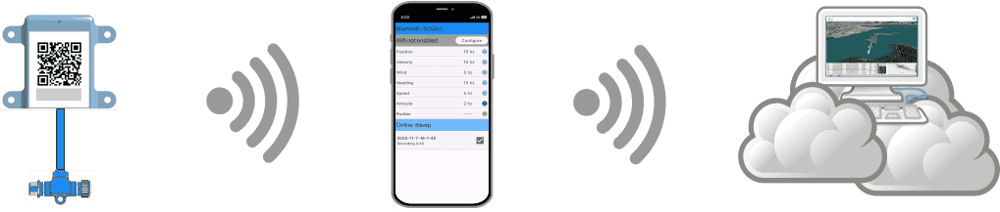

NMEA 2000 → Bluetooth → Phone → Cloud

The easiest and best way to collect data and send it to the cloud. Use the See Sailing hardware gateway to stream from your instrumentation to the mobile app; and upload over cellular or wifi with a single tap.
✅ Simplest and least configuration.
✅ Will use phone GPS if none on yacht.
✅ Fast - around 130 messages/sec.
✅ Highest resolution data.
✅ Can transport attitude (heel/trim) data.
More details in the documentation for NMEA 2000 connections.
NMEA 0183 → WiFi → Phone → Cloud

If you already have a WiFi gateway in your yacht it's likely compatible with the mobile app without any modifications. You can still upload over cellular or wifi with a single tap.
✅ Compatible with generic WiFi bridge.
✅ Will use phone GPS if none on yacht.
❌ Slower - 10-20 messages/sec.
❌ Low resolution data.
❌ No attitude data.
More details in the documentation for NMEA 0183 connections.
Sailing Processor Logfile → Cloud
Those running a sailing processor, voyage recorder or laptop analysis software (such as Expedition) are able to upload their log files directly to the web. See Sailing supports parsing the files but getting them to the point where they can be uploaded (via a web form) is left to the user.
✅ A simple visualisation solution for Expedition users.
✅ Tested with logfiles from B&G Triton and Hercules.
✅ Also compatible with CANBoat logs (for NMEA 2000) and NMEA 0183 text logs.
✅ No real limit on data resolution.
❌ User experience can be ... awkward.
❌ Cannot insert missing GPS data.
More details in the uploading documentation.